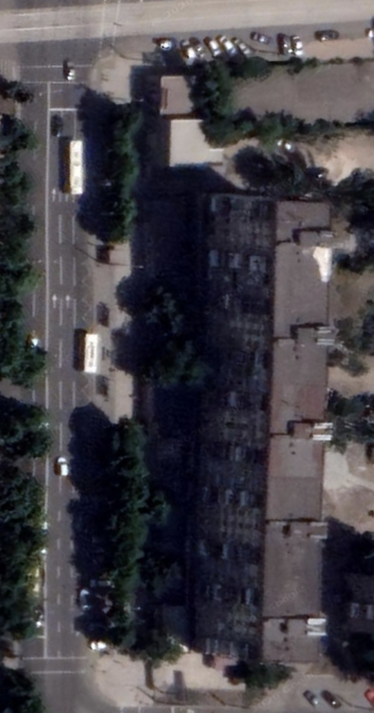
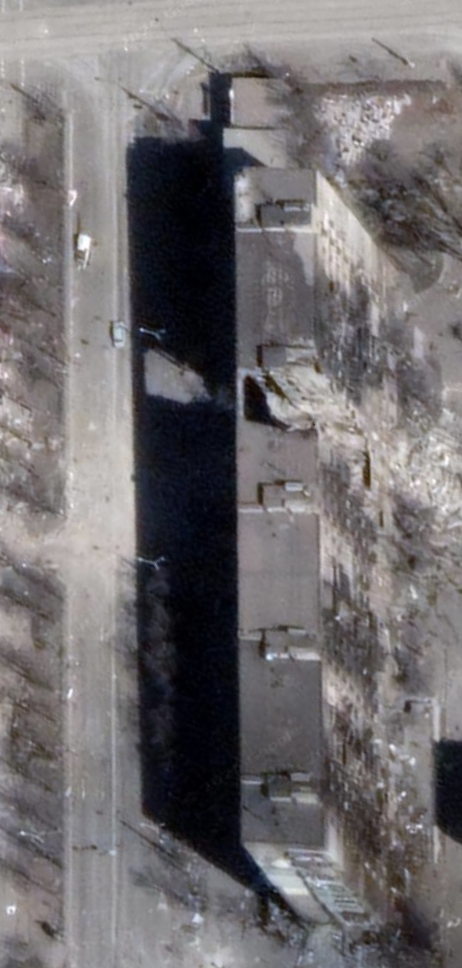
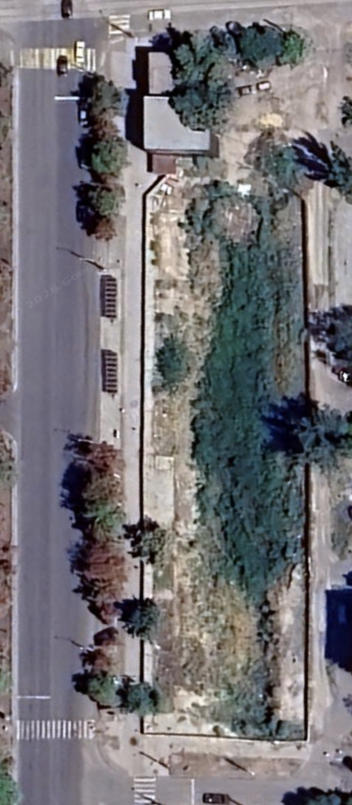

Один дом, три суда · Как устроена грабительская схема «снести и перепродать» — словами самих оккупантов
Особое производство → апелляция → федеральная кассация
Они судились с оккупантом в его же судах — и трижды проиграли.
Шестьдесят жильцов снесённой девятиэтажки на проспекте Металлургов почти два года подряд проигрывали одно и то же дело в трёх инстанциях российской судебной системы. Но чтобы отказать им, судам пришлось самим в точности описать собственную грабительскую схему «снести и перепродать». Помимо прочего, в деле обнаружился договор на снос, датированный двумя годами позже того, как дом уже превратился в руины. И это уже не спишешь на «домыслы активистов» — всё записано сухим языком судебного протокола.
60жильцов подали
коллективный иск
коллективный иск
3 / 3суда вынесли решение
против них
против них
22из 60 получили одобренную
компенсацию — а 38 нет
компенсацию — а 38 нет
~103 млн.руб ₽договор на снос датирован
на 2 года позже самого сноса
на 2 года позже самого сноса
45 тыс. vs 53 тыс. руб.максимальная компенсация vs минимальная рыночная
цена за м² (₽)
цена за м² (₽)
RD4U · A3.6
Римский статут · 8(2)(a)(iv)
Римский статут · 8(2)(b)(viii)
00 · Адрес
Девятиэтажка в центре города
Типичная советская кирпичная девятиэтажка стояла по адресу проспект Металлургов, 47 в центре Мариуполя — примерно в 800 метрах от драмтеатра, рядом с центральным рынком, на одном из самых длинных проспектов города, там, где он пересекается с улицей СоборнойОккупанты переименовали её в честь советского архитектора Евгения Варганова.. Во время штурма Мариуполя она стала одним из самых узнаваемых кадров войны на фото российских военкоровДругих журналистов, кроме украинцев Мстислава Чернова и Евгения Малолетки, чьи кадры легли в основу документального фильма «20 дней в Мариуполе», в городе во время штурма не было.: один подъезд пробит насквозь и обрушен, остальные ещё стоят. Люди продолжали жить в подвале дома даже после того, как уличные бои переместились дальше.
01 · Вид сверху · три даты
Целый дом до войны, разрушен во время штурма, потом снесён
Один и тот же участок, снятый со спутника на протяжении четырёх лет. В июне 2021 года - дом цел. К марту 2022 года один подъезд полностью обрушен — провал на его месте виден невооружённым глазом. К августу 2024 года дома больше нет — участок расчищен до голой земли.
Июнь 2021 · дом цел
Март 2022 · подъезд обрушен

Авг. 2024 · участок расчищен

Тот же дом по состоянию на конец марта 2022 года, вид с земли. Это кадры из любительской съёмки на ютюбе, сделанные с земли. На них хорошо видно тот самый обрушенный подъезд с торчащими кусками арматуры и обугленными стенами.
Март 2022 · вид с земли

Март 2022 · крупным планом

02 · Вверх по судебным инстанциям
Одно и то же дело было проиграно на всех трёх уровнях
Довоенному объединению собственников жилья (ОСМД) в этом доме пришлось в июле 2024 года перерегистрироваться как российское юрлицо ТСЖ «Троянда-М», — только для того, чтобы суд вообще признал его стороной по делу. Но и это не помогло. Новое ТСЖ проиграло во всех инстанциях как оккупационных, так и федеральных кассационных судов.
| Суд | № дела | Судья | Дата | Итог |
|---|---|---|---|---|
| Жовтневый районный суд («ДНР») | 2-259/2025 | Сазонова Юлия Юрьевна | 21.07.2025 | Отказано |
| Верховный суд «ДНР» (апелляция) | 33-2575/2025 | Гуридова Н.Н. (судья-докладчик; председательствующая — Олейникова В.В.) | 13.11.2025 | Решение нижестоящей инстанции оставлено в силе |
| Второй кассационный суд общей юрисдикции (федеральный) | 8Г-12687/2026 | Васильева Татьяна Геннадьевна | 05.05.2026 | Отказано |
Единый идентификатор дела 93RS0006-01-2024-005922-91 проходит через все три инстанции. Российское издание «Агентство» (27.02.2026) писало, что жильцы подают жалобу «в Верховный суд», — но собственная карточка кассационного дела (№8Г-12687/2026, заархивирована напрямую из первоисточника, ссылка выше) показывает, что жалобу приняла и зарегистрировала именно Второй кассационный суд общей юрисдикции 06.04.2026 — это стандартный порядок движения кассационной жалобы в этой системе — и вынесла по ней решение 05.05.2026. В этой же карточке есть отдельное поле специально для передачи материалов в Верховный суд России или из него — и там стоит «нет». Внутригосударственные средства защиты заканчиваются на этой федеральной кассационной инстанции.
Мотивировку отказа в апелляции в Верховном суде «ДНР» стоит изучить внимательно. Ещё до того, как ТСЖ «Троянда-М» в 2024 году прошло перерегистрацию, снесённый объект был официально закреплён за государственным оператором сноса ППК «Единый заказчик». Суд решил, что эта передача на баланс произошла раньше, чем объединение жильцов вернуло себе право на иск, — то есть тот самый разрыв во времени, который создал сам оккупант между сносом дома и моментом, когда жильцам разрешили самоорганизоваться и подать жалобу, стал официальной причиной, по которой их возражение сочли не соответствующим срокам подачи жалобы.
03 · Материалы дела в собственных словах суда
Факты, которые пришлось изложить самому оккупационному суду
Судебные решения обычно читают ради вывода. Но это решение куда полезнее читать ради установленных им фактов: чтобы объяснить, почему жильцы проиграли, апелляционный суд изложил всю административную последовательность, которая и привела к этому поражению истцов. Каждая дата ниже взята непосредственно из текста решения на сайте соответствующего суда.
Февр.–март 2022
Дом получает повреждения во время штурма города; один подъезд разрушен попаданием снаряда, которое жильцы датируют 17 марта 2022 года. Люди продолжают жить в доме и его подвале.
29.09.2022
Заключение комиссии №118 признаёт дом непригодным для проживания и назначает под снос — по процедуре (Постановление «ГКО ДНР» №162), которую, по словам жильцов, ни разу не соблюли: в трёх документах дела фигурируют три разных состава комиссии. В тот же день Распоряжение «ГКО ДНР» №56 называет именно этот адрес — пр-т Металлургов, 47 — в перечне из 177 мариупольских зданий, назначенных под снос (Единый реестр сноса Минстроя ДНР, строка 277;).
10–25.12.2022
Дом физически снесён — дата установлена по собственной видеозаписи жильцов того времени: на ней видно, как дом разбирают по частям, и уже к 20 декабря от него остаются одни руины.
26.07.2023
Официальный акт о завершённом сносе называет ООО «РКС-НР» стороной, выполнившей демонтаж.
07.09.2023
Указ главы «ДНР» №291 передаёт застройщику муниципальные земельные участки без аукциона — один из них, площадью 3136 м², как раз на пересечении с проспектом Металлургов, — под «масштабный инвестиционный проект» «Новое время 2». По словам жильцов, именно тогда их адрес был «аннулирован».
28.10.2024
Подан коллективный иск от имени ТСЖ «Троянда-М».
27.12.2024
Подписан договор на снос между «Единым заказчиком» и «РКС-НР» на сумму около 103 миллионов рублей — его огласила сама судья на заседании в апреле 2025 года. Дата договора — на два года позже того, как собственная видеозапись жильцов уже зафиксировала снос дома в конце 2022-го.
Восемь погибших жителей дома поимённо
По этому адресу зафиксированы как минимум восемь погибших жильцов, умерших в период осады (февраль–март 2022), согласно данным проекта Mariupol Destruction and Victims Map (карта разрушений и жертв Мариуполя), сверенным с телеграм-каналом t.me/mariupolRIP и memorial.ua. Независимо задокументированы два места дворового захоронения: Фёдорова Надежда (р. 1938, погибла от обстрела 01–03.03.2022) была похоронена возле дома, в ковре — «перезахоронение неизвестно»; Харакоз Наталья Георгиевна (р. 1935, известная в Мариуполе писательница и журналистка, умерла 29.03.2022 от стресса и нехватки медикаментов) была похоронена в общей могиле во дворе, позднее эксгумирована и перезахоронена на Старокрымском кладбище — её могилу удалось найти лишь потому, что соседка перед захоронением в братской могиле положила ей в карман записку с именем.
| Имя | Дата гибели | Обстоятельства | Источник |
|---|---|---|---|
| Фёдорова Надежда | 01–03.03.2022 | Обстрел выбил окна; ранена осколками стекла; остановилось сердце. Похоронена возле дома, в ковре; перезахоронение неизвестно. | memorial.ua |
| Харакоз Наталья Георгиевна | 29.03.2022 | Умерла от стресса, условий, нехватки медикаментов. Похоронена в общей могиле во дворе; позднее перезахоронена на Старокрымском кладбище. | от внучки + t.me/mariupolRIP/25434 |
| Тёрин Александр Евгеньевич | период осады | Тело найдено при разборе завалов. | t.me/mariupolRIP/19202 |
| Тёрина Елена Александровна | период осады | Тело найдено при разборе завалов. | t.me/mariupolRIP/19202 |
| Иванов Максим Владимирович | 17.03.2022 | Погиб в результате авианалёта вместе с мамой Людмилой. | t.me/mariupolRIP/19075, /44185 |
| Паскаль Мария | 24.03.2022 | Погибла при обстреле, готовя во дворе (супружеская пара с Галушко Андреем, ниже; тот же адрес гибели и захоронения). | от соседей + t.me/mariupolRIP/30852 |
| Галушко Андрей | 24.03.2022 | Погиб при обстреле, готовя во дворе (супружеская пара с Паскаль Марией, выше). | от соседей + t.me/mariupolRIP/30852 |
| Горлачова Раиса Дмитриевна | 17.03.2022 | — | t.me/mariupolRIP/44164 |
Мать Максима Иванова Людмила также названа погибшей в том же авианалёте 17.03.2022, но не имеет отдельной строки в источнике.
Деталь, которая говорит сама за себя
Договор на снос дома, подписанный через два года после того, как этот дом уже снесли, — на 103 миллиона рублей. Представительница жильцов, которая в декабре 2022 года лично снимала настоящий снос на видео, сидела в зале суда и слышала, как договор от декабря 2024-го назвали правовым основанием для того, что произошло двумя годами ранее. Эту последовательность зафиксировал сам суд, который вынес решение против жильцов.
В том же деле есть ещё два нарушения. Технический отчёт, на основании которого дом признали аварийным, жильцы оспаривали на основании отсутствия подписи. Апелляционный суд зафиксировал это возражение, и всё равно сослался на него же. А в документах о признании дома аварийным фигурируют три разных состава комиссии в трёх разных документах — что прямо нарушает собственные законы оккупантов — конкретно постановление «ГКО ДНР» №162, устанавливающее порядок сноса аварийных зданий. Апелляционный суд довод о нарушении порядка формирования комиссии отклонил — но не разбирая по существу саму нестыковку с тремя составами, а на чисто процедурном основании: «в материалах дела отсутствуют сведения о том, что собственники... изъявили желание участвовать в комиссии». Отдельный довод истцов — что в комиссию не включили балансодержателя дома — суд тоже отклонил, и тоже по формальной причине: на дату заключения №118 (29.09.2022) дом числился за ППК «Единый заказчик», а ТСЖ «Троянда-М» тогда ещё не существовало.
04 · Реальный подрядчик сноса засветился на видео
«„КрашМаш“ сносит Металлургов, 47»
Кто на самом деле физически снёс дом, известно точно благодаря видеозаписи, загруженной на ютюб 14 декабря 2022 года под названием «МАРИУПОЛЬ! КРАШМАШ СНОСИТ ЗНАМЕНИТУЮ МНОГОЭТАЖКУ НА МЕТАЛЛУРГОВ!». «„КрашМаш“ сносит Металлургов, 47». Описание самого видео датирует начало работ 10 декабря: «Знаменитое здание на Металлургов 47, чьи фотографии известны всему миру пошло под снос. Многометровый экскаватор компании «КрашМаш» приступил к работам 10 декабря». Второе видео, уже собственного производства подрядчика, открывается титром «Снос домов в Мариуполе» на фоне логотипа компании. А кадры украиноязычного канала за октябрь 2022 года — то есть ещё до сноса — идентифицируют тот же фасад как «проспект Металургів, 47». Независимые источники, разные языки, один и тот же адрес.
Физический подрядчик — ООО «ГК КрашМаш», петербургская компания по демонтажу зданий, на собственном сайте которой описан контракт 2022 года на снос «37 разрушенных объектов в центре» Мариуполя в рамках программы восстановления.
Второй, независимый источник о «КрашМаш» идёт дальше собственных материалов компании: в отраслевом строительном журнале опубликовано интервью на условиях указания имени с генеральным директором Виктором Казаковым. Он утверждает, что работа компании в Мариуполе началась в октябре 2022 года, что панельные дома высотой до 40 метров сносят только после осмотра МЧС и Минобороны и расселения жильцов.
Окт. 2022заявленная самой компанией дата начала работы в Мариуполе
5–12 днейзаявленный типичный срок сноса
Открытым остаётся не роль «КрашМаш», а название «Северный Ветер» — так жильцы называют компанию, фигурирующую в спорной, бумажной стороне этой истории. Наиболее непротиворечивое прочтение всех источников таково: технику на объекте в декабре 2022 года использовал именно «КрашМаш», а бумажный след с упоминанием других юрлиц был собран задним числом — и договор от 27 декабря 2024 года входит именно в этот бумажный след.
05 · Кому это выгодно и замкнутый круг
Федеральный застройщик и «компенсация» чужим жильём
Земля под расчищенным участком на месте дома №47 без аукциона перешла специализированному застройщику СЗ «РКС-НР» — это одно звено из цепочки, которая тянется вверх через «РосКапСтрой», федеральное учреждение при Минстрое России. У всех звеньев этой цепочки есть конкретные имена и конечный бенефициар:
Шарипов Ильдар Радикович
Директор «РКС-НР», застройщика ЖК «Новое время 2» на месте дома №47 по проспекту Металлургов. По данным журналистских расследований, он одновременно числится в штате московского «Москапстроя».
Хуснуллин Марат Шакирзянович
Заместитель председателя правительства России, официально курирующий восстановление оккупированных территорий, — федеральный чиновник, на которого в конечном счёте замыкается вся цепочка строительных работ в оккупированном Мариуполе.
Названные должностные лица и бенефициары действуют в официальном качестве, поэтому мы называем их полные имена как соучастников. Более полную схему связей между застройщиками и министерствами см. в разделе проекта «Сеть заинтересованных сторон» (пока нет перевода, ссылка временно ведёт на английскую версию).
Ставка компенсации, устаноленная оккупационной администрацией — 45 000 рублей за квадратный метр; по данным одного независимого российского издания, самые дешёвые квартиры на мариупольском рынке стоят от 53 000 за квадрат — то есть недобор примерно в 15% по одной этой цифре из прессы. Наш проект проверил это утверждение по собственному массиву объявлений о продаже жилья, — и разрыв оказался ещё больше: среди 266 проанализированных объявлений о продаже готового жилья ставка компенсации не дотягивает даже до самых дешёвых 5% рынка недвижимости на 19%, а до общегородской медианы — на 43%. И платят эту компенсацию — если платят вообще — жильём из фонда «бесхозяйного» имущества: квартирами других вынужденно перемещённых украинцев, которые уехали и не смогли вернуться, чтобы оформить право собственности по требованиям российской юрисдикции. То есть одних лишённых жилья людей в качестве возмещения предлагают заселить в отобранные дома других.
45 000₽/м² — заявленная ставка компенсации оккупационной администрации
55 769₽/м² — самые дешёвые 5% в собственном массиве объявлений проекта
−19%ставка компенсации против этих самых дешёвых 5%, по 266 объявлениям
−43%ставка компенсации против общегородской медианы
Дом признан аварийным и снесён
Металлургов, 47 · дек. 2022
→
Земля передана без аукциона
Указ №291 → «РКС-НР», «Новое время 2»
→
Новые квартиры продаются
по льготной ипотеке 2% для граждан РФ — но местные жители жалуются, что для них эта опция недоступна
→
Прежним владельцам «компенсируют»
ниже рынка, чужим отобранным жильём — если вообще компенсируют
06 · Почему это дело важно
Единственное известное дело, где лишённые жилья мариупольцы открыто сопротивлялись грабежу
Все прочие дела в этом проекте фиксируют изъятие, которое оккупант оформил без всякого сопротивления, — запись в реестре, распоряжение о сносе, карточка дела, где со стороны ответчика попросту никого нет. В этом деле мы видим другое: что происходит, когда жильцы пользуются единственной возможностью, формально оставленной им оккупантами. Разумеется, они проиграли во всех инстанциях — система и не предполагала иного исхода — но они вынудили оккупационные суды письменно зафиксировать самое подробное из существующих документальных описаний изъятия: признание дома аварийным по трём противоречащим друг другу составам комиссии; явно юридически ничтожный технический отчёт, на который суд всё равно сослался как на довод; отношения оккупационных властей с подрядчиком, оформленные договором на 103 миллиона рублей спустя два года после работы, которую этот договор якобы санкционировал; и право на компенсационное жильё, которое, по собственной переписке администрации, так и осталось неисполненным.
Это дело фиксирует и то, чего не может установить ни оценка ущерба, ни запись в реестре: исчерпание внутригосударственных средств правовой защиты — первая инстанция, апелляция и федеральная кассация, весь путь, который эта система вообще предоставляет. Именно это исчерпание — процедурное условие, которое требуют выполнить механизмы реституции и собственная практика Европейского суда по правам человека, восходящая к прецеденту «Лоизиду против Турции», прежде чем жалобу вообще примут к рассмотрению. Жильцы этот шаг не пропустили. А оккупационные суды сами составили протокол об этом.
Словами самих жильцов
Исчерпав все возможности формально восстановить свои права, жители дома №47 прибегли к последнему средству: публичному обращению. На одном из таких видео они обращаются российским властям поимённо. Женщина из квартиры 116, инвалид второй группы, пережившая осаду в подвале, сказала, что теперь живёт «на улице». Мать двоих маленьких детей просит только об одном — расселить её семью где-то рядом, чтобы, когда на этом месте вырастет новый дом, им могли дать в нём квартиру. «Полный правовой беспредел», — говорит одна из них под конец. «Нарушение прав человека в пользу бизнеса».
Живые жильцы — частные лица — здесь не названы поимённо; их слова приведены дословно, а личности анонимизированы согласно правилу проекта о защите персональных данных, в отличие от судей, чиновников оккупационной администрации и других лиц, действующих в официальном качестве.
RD4U · A3.6 · утрата доступа к жилью
Римский статут · 8(2)(a)(iv) · присвоение имущества
Римский статут · 8(2)(b)(viii) · перемещение населения
07 · Происхождение
Источники
Каждый документ, фотография и видео, упомянутые на этой странице, получены из первоисточника по стандартной для проекта цепочке хранения доказательств — с хэшем SHA-256 и меткой времени UTC, зафиксированными при получении, и с сохранением исходного файла до любого анализа. Установленные судом факты можно проверить по тексту захваченного решения; адрес и цепочка застройщика подтверждены прессой, телеграм-каналами и видеоисточниками, независимыми друг от друга.
Полный каталог источников и заметки о проверке
- Первоисточник · материалы суда всех трёх инстанций Карточка дела, дело первой инстанции 2-259/2025 (Жовтневый районный суд, судья Сазонова Ю.Ю., отказано 21.07.2025); апелляционное решение, дело 33-2575/2025 (Верховный суд «ДНР», председательствующая Олейникова В.В., судья-докладчик Гуридова Н.Н., оставлено в силе 13.11.2025); карточка дела, федеральная кассация, дело 8Г-12687/2026 (Второй кассационный суд общей юрисдикции, судья Васильева Т.Г., принята к производству 06.04.2026, отказано 05.05.2026 — карточка подтверждает отсутствие передачи материалов в Верховный суд России или из него). Единый идентификатор 93RS0006-01-2024-005922-91 проходит через все три инстанции. Апелляционное решение везде скрывает адрес — по общероссийской практике обезличивания судебных актов (Федеральный закон №262-ФЗ); адрес устанавливается независимо от материалов суда, см. ниже.
- Распоряжение о сносе · запись в реестре Единый реестр сноса Минстроя ДНР (CSV, получен 09.06.2026), строка 277: Распоряжение «ГКО ДНР» №56 от 29.09.2022 называет «г. Мариуполь, пр-т. Металлургов, д. 47» в перечне из 177 мариупольских адресов, назначенных под снос — та же дата, что и заключение комиссии №118 выше.
- Адрес · шесть независимых источников Пресса (Agents.Media — о кассационной жалобе 60 жильцов; КП-Донецк — о новостройке на этом месте) и телеграм-каналы (@metallgov, @mariupollnew, @novosti_mariupol1, @allmarinews) сходятся на адресе проспект Металлургов, 47 без каких-либо противоречий. Этот же адрес совпадает с проектом «Новое время 2», названным в тексте решения.
- Спутниковые снимки · до / во время / после Спутниковые снимки участка по адресу проспект Металлургов, 47 на три даты — июнь 2021 (дом цел), март 2022 (подъезд обрушен), август 2024 (участок расчищен). Снос завершён к 18.09.2024 по данным КП-Донецк.
- Подрядчик по сносу · надпись в кадре Видео, загруженное 14.12.2022 («МАРИУПОЛЬ! КРАШМАШ СНОСИТ ЗНАМЕНИТУЮ МНОГОЭТАЖКУ НА МЕТАЛЛУРГОВ!», автор Игорь Семенов) независимой третьей стороной, с надписью в кадре «„КрашМаш“ сносит Металлургов 47»; собственное видео о сносе и корпоративный сайт «КрашМаш»; кадры украиноязычного канала от 12.10.2022 с подписью «проспект Металургів, 47» на том же фасаде. ООО «ГК КрашМаш», ИНН 7842525925, Санкт-Петербург. Два кадра с улицы, снятые во время удара в марте 2022 года, — та же съёмка, что и в упомянутом выше видео от 17.03.2022.
- Гибель людей и дворовые захоронения · восемь поимённо
Mariupol
Destruction and Victims Map (опубликованная таблица жертв, захвачена 03.07.2026,
sha256
3b10d33f56cd…, 4515 строк по всему городу), сверена с телеграм-каналом t.me/mariupolRIP (посты 19075, 19202, 25434, 30852, 44164, 44185) и memorial.ua (sha2564c533ad8d4dc…). Полная таблица выше. Захвачено по стандартной цепочке хранения доказательств этого проекта (scripts/239_capture_metallurgov47_casualty_record.py) и загружено в базу (scripts/240_load_metallurgov47_casualty_record.py, property_id 4529). - Подрядчик по сносу · директор поимённо, отраслевая пресса Материал на одну страницу из отраслевого строительного журнала, размещённый на сайте самого «КрашМаш», — интервью с указанием имени с генеральным директором Виктором Александровичем Казаковым: работа в Мариуполе началась в октябре 2022 года; 35 специалистов, 25 единиц техники, уникальный экскаватор Caterpillar 390DLME с вылетом стрелы 60 метров; типичный срок сноса — 5–12 дней; только собственная техника. Адрес не назван — материал подтверждает масштаб и метод работы в городе, но не привязан к этому конкретному дому.
- Цепочка застройщика · федеральный девелопер «РКС-Девелопмент» / «РКС-НР» → «РосКапСтрой» (Минстрой России); директор «РКС-НР» Шарипов Ильдар Радикович; расследование Центра «Досье» «Мариупольский передел» связывает Шарипова с «Москапстроем» и вице-премьером Маратом Хуснуллиным. Передача земельного участка: указ главы «ДНР» №291 (07.09.2023). Ставка компенсации 45 000 ₽/м² по данным Agents.Media — против нижней планки в 53 000 ₽/м² по данным прессы и против собственного показателя проекта по массиву объявлений о продаже, см. ниже.
- Проверка рыночной планки · собственный массив объявлений проекта Рассчитано по собственному массиву объявлений о продаже мариупольских квартир (1243 объявления всего), собранных из телеграма и сайтов российских риелторских агентств, отфильтрованных до 266 сопоставимых лотов вторичного жилья. Полная методика и цифры до/после — во внутренней документации проекта (case study).
- Свидетельства жильцов Видео от июня 2025 года от представительницы истцов, в котором она показывает материалы открытого судебного разбирательства; и второе видео с места, где жильцы обращаются на камеру у руин дома. Рассматривается как свидетельство самих лишённых жилья людей, подтверждённое текстом судебного решения там, где они пересекаются. Живые частные лица анонимизированы; их реплики сохранены и приведены дословно, имена — нет.
- Общий контекст По данным Центра «Досье» (на 01.11.2025): всего 22 667 квартир в 366 снесённых домах; компенсационный дефицит в 5141 квартиру оккупационная администрация намерена восполнить за счёт реестра «бесхозяйного» имущества; изъятые квартиры распределяются с документально подтверждённым приоритетом для силовиков и «ветеранов СВО».
См. также: Как устроен судебный конвейер изъятия жилья у мариупольцев, основное досье и в разделе проекта «с графом связей между заинтересованными сторонами» (пока нет перевода, ссылка временно ведёт на английскую версию).
Поддержать проект
Этот проект ведёт автор в одиночку — без финансирования и грантов, на собственные средства и время. Если вы считаете эту работу нужной, вы можете помочь мне покрыть часть расходов.
PayPal
kovalever@googlemail.com
PayPal — для читателей из США
НКО 501(c)(3) — пожертвование с налоговым вычетом для граждан США
Revolut
@alexeypklg
USDT (TRC20)
TGQwaGQsBJbFy2nqCm4YVC76cjFRwFaduS
только сеть Tron